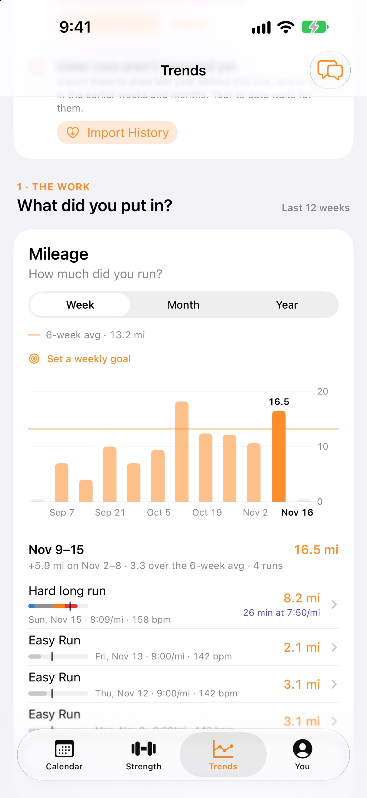
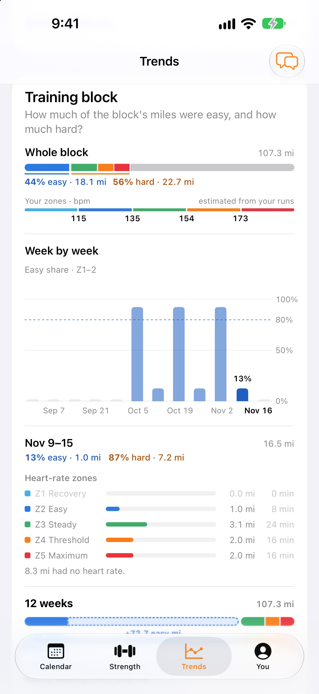
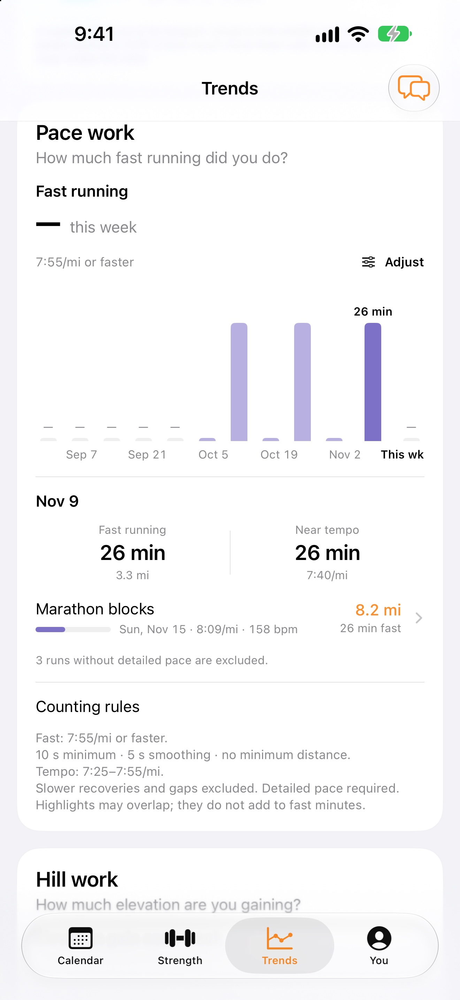
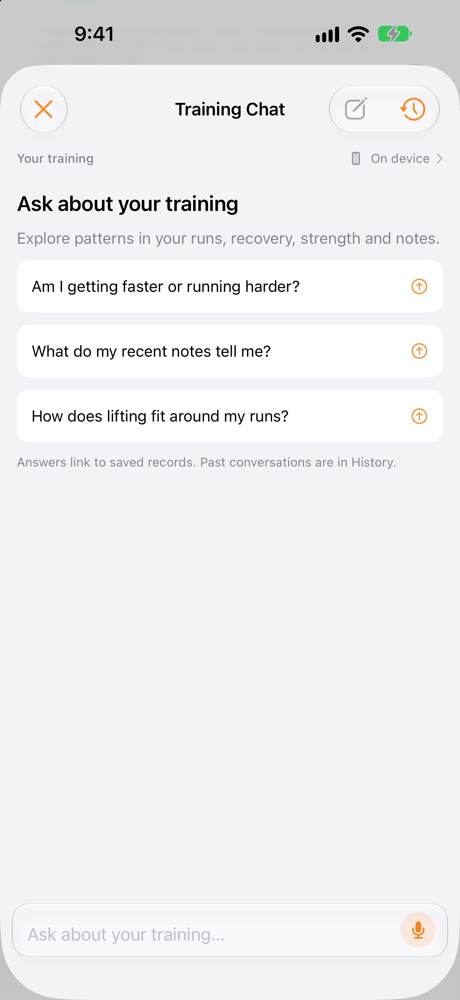
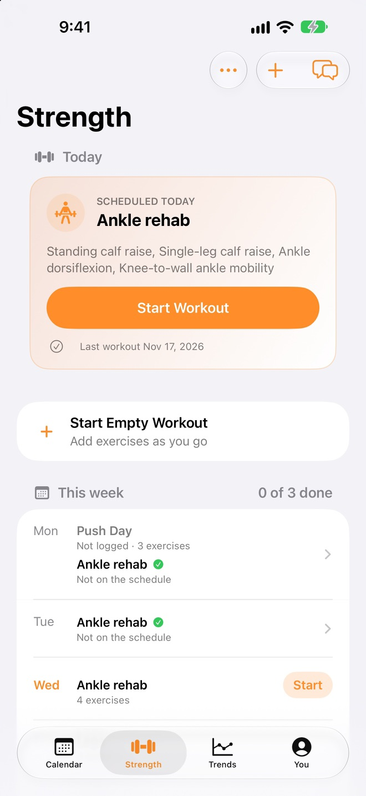
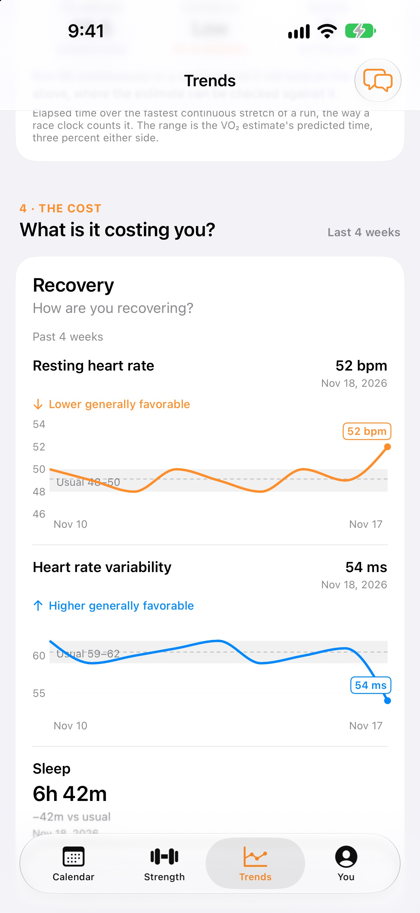
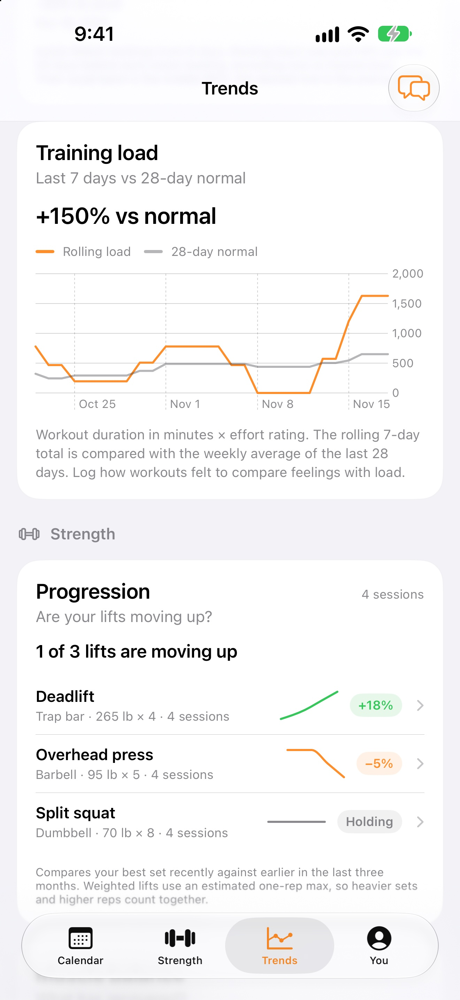
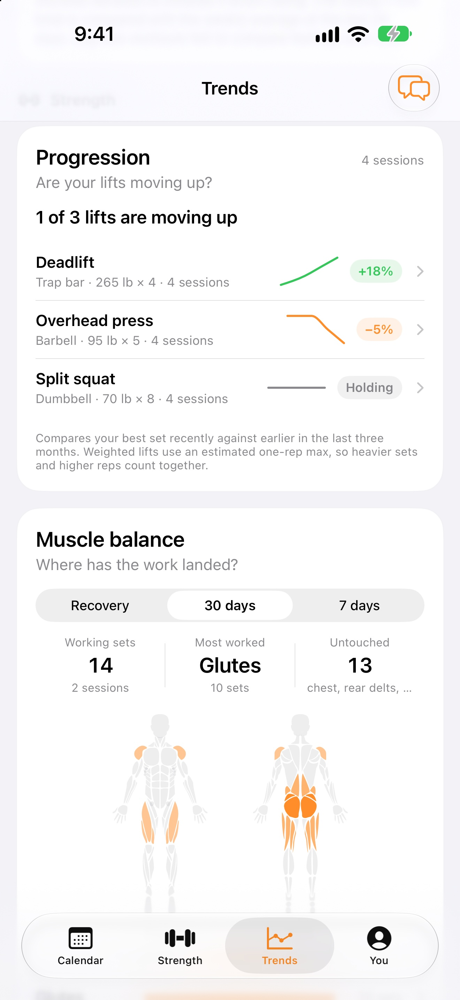

Plan the week.
Put runs, rides, lifts and rest days on one calendar. Paste a training plan, see completed workouts beside it and adjust the days ahead.
Bring your training plan, strength sessions and Apple Watch workouts together. Explore your mileage, pace and heart rate, and ask about the patterns.

For iPhone, iPad and Mac.


Put runs, rides, lifts and rest days on one calendar. Paste a training plan, see completed workouts beside it and adjust the days ahead.
See weekly mileage, pace work and heart-rate zones from your recorded workouts. Select a week to see the runs behind it.
Explore patterns in your runs, recovery, strength and notes. Chat uses your saved training records and links answers to their sources.
Weekly mileage, easy-versus-hard balance and speed work, with the runs behind each chart. Select a week to explore its workouts.
See your weekly totals, compare them over time and open the runs behind a week.

Explore your training balance, heart-rate zones and the weeks behind the split.

Track fast-running minutes, time near tempo and the sessions that contributed.
Are you getting faster or running harder? What do your notes say? How does lifting fit around your runs?
Ask in plain language. Chat reads your saved training records and links answers back to their sources. Reopen a conversation from History to keep exploring.

Keep your strength work beside your running. Start from a template or an empty workout, log the session as you go and save completed lifts to Apple Health.
Rest timers and a Live Activity keep the next set close, even when you leave the app.

Keep recovery, training load and lifting in the same picture, alongside your running metrics.

Resting heart rate, HRV and sleep, with your usual range in view.

Compare your rolling seven-day load with your 28-day normal.

Follow your lifts over time and see where the work has landed.
Plan workouts and edit reusable strength templates on Mac, too. Your plans, exercise library and templates sync through your own iCloud. Workout history, notes and saved conversations stay on the device where you use them.
No Pace and Plan account, ads or tracking. You choose Apple Health access and whether to enable Apple’s Private Cloud Compute for supported intelligence features.
Read the privacy policyApple Health analysis is available on iPhone and iPad. Apple Intelligence features require a compatible device and appropriate settings. iCloud is required for planning sync. Screenshots show sample training data.
Apple and the Apple logo are trademarks of Apple Inc. App Store is a service mark of Apple Inc.